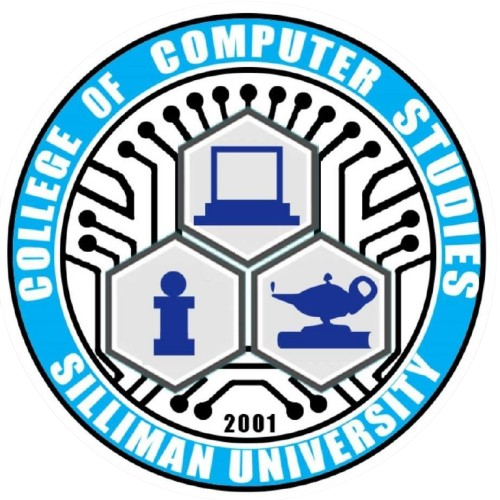
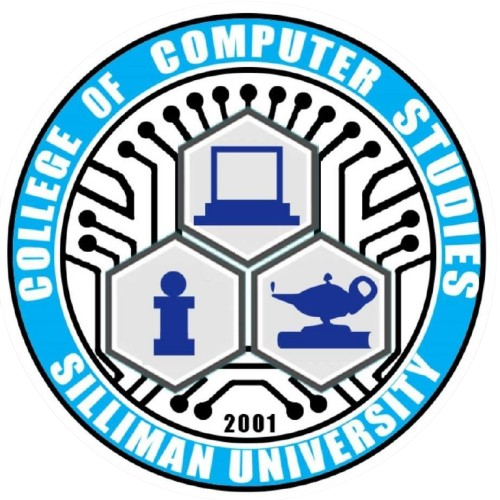

The 5 Cs
Classroom
Culture
Church
Community
Court

The 5 Cs
Classroom
Culture
Church
Community
Court

Silliman University places a strong emphasis on the classroom as a transformative space for academic excellence and character development. The university provides a holistic educational experience, blending rigorous academic training with values-driven instruction that nurtures both intellect and integrity. Teachers serve not just as educators but as mentors, fostering critical thinking, creativity, and ethical decision-making in students. The classroom is not merely a place for acquiring knowledge but a dynamic environment where students are encouraged to explore their passions, challenge conventional ideas, and engage in meaningful discussions. Silliman’s commitment to small class sizes, modern facilities, and innovative teaching methods ensures that learning is personalized and impactful, preparing students to excel in their chosen fields while remaining mindful of their responsibilities to society.
Silliman University celebrates and preserves culture as an integral part of its identity, weaving Filipino traditions and global perspectives into its community fabric. Through various programs, events, and initiatives, the university actively promotes the richness of Filipino heritage, arts, and literature while fostering appreciation for diverse cultures around the world. Cultural activities on campus, such as theater performances, art exhibits, and musical presentations, provide students with opportunities to showcase their talents and deepen their understanding of the arts. The institution also encourages critical discussions about cultural identity and heritage, helping students navigate the intersection of traditional values and contemporary global challenges. By placing culture at the heart of its mission, Silliman cultivates well-rounded individuals who are proud of their roots while embracing a global mindset.
As a Christian institution, the church plays a central role in the life and mission of Silliman University, fostering spiritual growth and moral development among students, faculty, and staff. The university promotes an inclusive and ecumenical environment where individuals of different faiths and denominations are welcome to explore and deepen their spirituality. Daily devotionals, chapel services, and student-led worship activities create spaces for reflection, prayer, and communal worship, instilling in the university community a sense of purpose and ethical responsibility. Silliman encourages its members to live out Christian values of love, compassion, and service, emphasizing that faith is not confined to the sanctuary but is demonstrated through action. The university’s faith-based foundation ensures that its graduates leave not only as professionals but as principled and spiritually grounded individuals.
Silliman University is deeply committed to serving the community, aligning its mission with the needs of society, especially the marginalized. Its outreach programs, volunteer initiatives, and research efforts aim to address social issues such as poverty, education, health, and environmental sustainability. Students are encouraged to engage in community service as part of their education, applying their skills and knowledge to create meaningful change. The university fosters a culture of empathy, empowering its members to collaborate with local and global communities in building a more equitable and just society. Whether through disaster relief operations, livelihood training programs, or environmental conservation projects, Silliman’s dedication to community engagement reflects its belief that education should extend beyond the campus and contribute to the greater good.
The court symbolizes Silliman University’s dedication to sportsmanship, physical well-being, and character development through athletics. The university offers a wide range of sports programs and facilities, providing students with opportunities to develop discipline, teamwork, and perseverance both on and off the field. Participation in athletics is seen not just as a physical activity but as a means of building leadership skills, self-confidence, and camaraderie among students. Regular sports events, such as intramurals and intercollegiate competitions, foster a healthy spirit of competition and pride in the Silliman community. Beyond physical fitness, the emphasis on sports instills in students the values of fairness, respect, and resilience, preparing them to face life’s challenges with a balanced mind and body. The court is thus not just a place for athletic performance but a vital part of Silliman’s commitment to holistic education.
Overall, I think GE10A is a pretty interesting course. This course lets you experience the 5Cs of Silliman University, giving you the privilege of what it feels like to be a true Sillimanian. To the future students taking GE10, I hope you fully devote yourself to this course as this can be a rough but sometimes fun journey. After finishing your journey make sure to congratulate yourself for finishing this course as that in itself is a truly impressive feat.